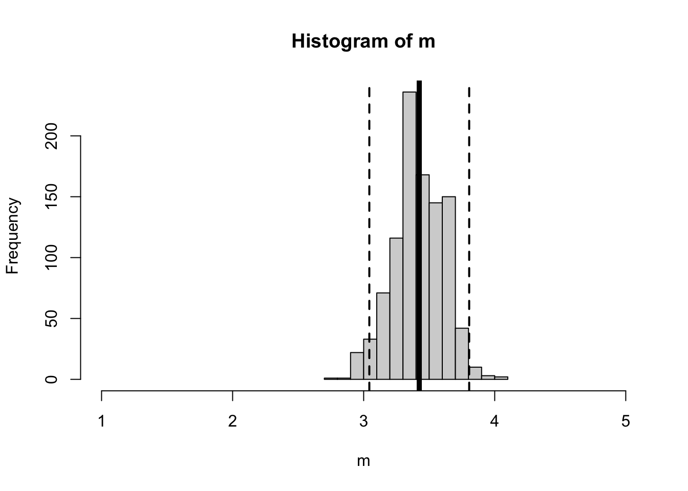

Load the grad onboarding dataset (name this d to follow along with professor code in lecture). The variable can.forloop asked students whether they could write a for-loop or not. What is the difference in the number of students who said that YES they could for-loop, compared to the number who said either NO or MAYBE? Find a way to get R to calculate this difference using code (hint : use indexing and the summary function.)
d <-read.csv("../datasets/Grad Onboard 2025/grad_onboard_SP25.csv",stringsAsFactors = T)plot(d$can.forloop)
summary(d$can.forloop) # finding the values for each group.
Maybe No Yes
15 10 8
(15+10) -8# answering question with numbers
[1] 17
(summary(d$can.forloop)[1] +summary(d$can.forloop)[2]) -summary(d$can.forloop)[3] # answering question with R code. a lot of code!
Maybe
17
s <-summary(d$can.forloop) # saving this output, since using it multiple times(s[1] + s[2]) - s[3] # same answer; much easier to look at!
Maybe
17
Now, write a for-loop to estimate how much sampling error might influence this number. Generate 1000 new samples, and re-calculate the difference between YES and NO + MAYBEs. What percentage of re-sampled groups would show that there are more people who CAN write a for-loop than NO or MAYBE?
bucket <-array()set.seed(424242) # "locks" in the randomization so everyone gets the same "random" result; must run immediately before the for-loop.for(i inc(1:1000)){ nd <- d[sample(1:nrow(d), nrow(d), replace = T), ] s <-summary(nd$can.forloop) bucket[i] <- (s[1] + s[2]) - s[3]}hist(bucket) # a normal distribution!
mean(bucket) # very similar to my original answer
[1] 17.132
sd(bucket) # the estimate of sampling error
[1] 4.954101
sum(bucket >0) # all of the re-sampled slopes show the same positive difference (more people less familiar w/ for-loops than are familiar.)
[1] 999
A bonus question. R wrote you a secret message. Run the code below to see it.
greyScale <-colorRampPalette(c("pink","red"))secretmessage <-function(r, col){ t <-seq(0,2*pi,length.out=100) x <- r*sin(t)^3 y <- (13*r/16)*cos(t) - (5*r/16)*cos(2*t) - (2*r/16)*cos(3*t) - (r/16)*cos(4*t)polygon(x,y,col=col,border=NA)}# create new plot canvasplot.new()# limits are approximate hereplot.window(xlim=c(-16,16),ylim=c(-16,13))# use mapply to loop; invisible to turn off an annoying output.invisible(mapply(secretmessage,seq(16,0,length.out=100),greyScale(100)))## source : https://stackoverflow.com/questions/6542825/equation-driven-smoothly-shaded-concentric-shapes## source : https://stackoverflow.com/questions/12984991/stop-lapply-from-printing-to-console
Announcements & Agenda
Agenda
9:10 - 9:30 : Check-In and Review
9:30 - 10:30 : Linear Models (Basics)
10:30 - 11:00 : Break & Presentation
11:00 - 12:00 : Linear Models (Continued)
Announcements
Discord!?!?
Lab Keys and Late Assignments.
would like to post key ASAP.
but late labs + key = TROUBLE. Ideas?
Mini Exam in TWO Weeks.
I give you data and a question, you generate a report in Quarto.
Data loading and cleaning.
Scale creating & descriptive statistics.
Linear Models (TODAY!)
Bootstrapping
A fun challenge problem worth 1 point.
Take home (9AM-12PM).
Ask questions on ZOOM if / when you have them. Okay? Don’t struggle on your own. Plenty of time to do that in other spaces!
We will practice / review next week (Lab 5 a practice exam.)
Think it will be chill, and if not then professor takes the blame, alright?
SST/length(residuals) # average of squared residuals (variance)
[1] 1.274564
sqrt(SST/length(residuals)) # average of residuals, unsquared (standard deviation)
[1] 1.128966
sd(d$self.skills) # slightly higher
[1] 1.14647
sqrt(SST/(length(residuals)-1)) # the 'real' equation; n-1 to inflate our estimate / adjust for small samples.
[1] 1.14647
The Mean is a Prediction of our Population (with Sampling Error)
m <-array()for(i inc(1:1000)){ nd <- d[sample(1:nrow(d), nrow(d), replace = T),] # a new sample m[i] <-mean(nd$self.skills, na.rm = T)}mean(d$self.skills, na.rm = T)
[1] 3.424242
mean(m) # similar!
[1] 3.420727
sum(m >2.5) # all of them (100% greater than the midpoint of the scale.)
[1] 1000
sd(m) # sampling error!
[1] 0.1943785
hist(m, xlim =c(1,5)) # our distribution of sampling estimates abline(v =c(mean(d$self.skills),mean(d$self.skills) +1.96*sd(m),mean(d$self.skills) -1.96*sd(m)),lwd =c(5,2,2), # two line widthslty =c(1,2,2)) # two line types

Linear Models : Improving our Predictions (Numeric IV)
The Mean as a Model
Note : I skipped over this in class today; the basic idea is that we can define a linear model to predict a variable from some constant value (1), and the result of that will be the mean, since the mean is our best prediction (minimizes the residual errors) when we don’t have any other information about the variable.
lm(self.skills ~1, data = d) # predicting self.skills from a constant (1), using the datset = d
Let’s try the same activity, but now we will graph each individual’s self-skill (still on the y-axis) in relationship to their perception of their classmates’ skill (on the x-axis).
plot(jitter(self.skills) ~ class.skills, data = d, ylab ="Self-Perception of Skills",xlab ="Perception of Classmates' Skills") abline(lm(self.skills ~ class.skills, data = d), lwd =0)
plot(jitter(self.skills) ~ class.skills, data = d, ylab ="Self-Perception of Skills",xlab ="Perception of Classmates' Skills") abline(lm(self.skills ~ class.skills, data = d), lwd =5)
The Linear Model :
To define a linear model, we will first use the lm() function to predict some DV from an IV.
Then, we will graph the relationship between these two variables using the plot() function. I’m using jitter() on the DV in order to shift the points a little, since they are overlapping.
Then, I draw a line (defined by the linear model) using the abline() function. I’ve made the line width = 5 and color red to make it POP.
I can look at the coefficients of the model with the coef() function. These coefficients are described by the starting place of the line when the x value is zero (the intercept), and the adjustment we make to Y as the X values increase.
mod1 <-lm(self.skills ~ class.skills, data = d)plot(jitter(self.skills) ~ class.skills, data = d, main ="Jittered Data") # jitteredabline(mod1, lwd =5, col ='red')
coef(mod1)
(Intercept) class.skills
1.9501188 0.3800475
# intercept = 1.95 = the predicted value of Y when ALL X values are ZERO.# slope = .38 = relationship between class.skills and our DV (self.skills)### as class.skills increase by ONE, then self.skills will increase by .38### these units are in the original unit of measurement (1-5 likert scale.)
There is Error in Our Prediction (residual error –> R^2)
In the graph above, I can see that the dots are not all exactly on the line. My predictions are wrong; this is residual error! For example, a person with an actual self-skill score of 2 has as a class-skill rating of 1. Our prediction of this person’s self-skill score, based on their class-skill rating of 1 is the the result of the linear model :
self.skill ~ 1.95 + .38 * class.skill
self.skill ~ 1.95 + .38 * 1
self.skill ~ 2.33
So the person’s residual score = the difference between their actual score and our prediction = 2 - 2.33 = -.33. Fortunately, R does the residual calcualtions for us, from the linear model object.
mod1$residuals # R does the residual calculation for us. what will happen if we add this up?
SSE <-sum(mod1$residuals^2) # so I square themSSE # the total squared error when I use my model to make predictions.
[1] 38.3753
## Visualizing Our Errors. (distance between actual scores and the line).par(mfrow =c(1,2))plot(d$self.skills, ylab ="Self-Perception of Skills",xlab ="Index", main ="Mean as Model \n(SST = Total Sum of Squared Errors)") abline(h =mean(d$self.skills, na.rm = T), lwd =5)plot(jitter(self.skills) ~ class.skills, data = d, main ="Linear Model \n(SSE = Sum of Squared Errors When Model Making Predictions)", xlim =c(1,5)) # jitteredabline(mod1, lwd =5, col ='red')
SST <-sum((d$self.skills -mean(d$self.skills))^2) # defining the total errorSST - SSE # a difference in errors when using the mean vs. our model
[1] 3.685309
(SST - SSE)/SST # the relative difference in errors = R^2 (R-squared.)
[1] 0.08761902
summary(mod1)$r.squared # R does this for us. But good to do "by hand" to understand.
[1] 0.08761902
There is Error in Our Prediction of the Population (sampling error)
Note : I ran out of time to do this in class, but recorded a video at the VERY END of lecture recording that works through this code.
bucket <-array()for(i inc(1:1000)){ nd <- d[sample(1:nrow(d), nrow(d), replace = T), ] modx <-lm(self.skills ~ class.skills, data = nd) bucket[i] <-coef(modx)[2]}hist(bucket) # what do we expect to see?abline(v =mean(bucket), lwd =5)abline(v =mean(bucket) +1.96*sd(bucket), lwd =2, lty ='dashed')abline(v =mean(bucket) -1.96*sd(bucket), lwd =2, lty ='dashed')mean(bucket)sd(bucket)
Time for Another Example?
Hah! Next time :)
names(d) # what other (numeric, for now) variable might predict self.skills?